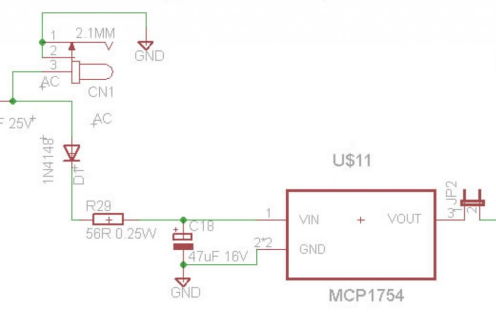
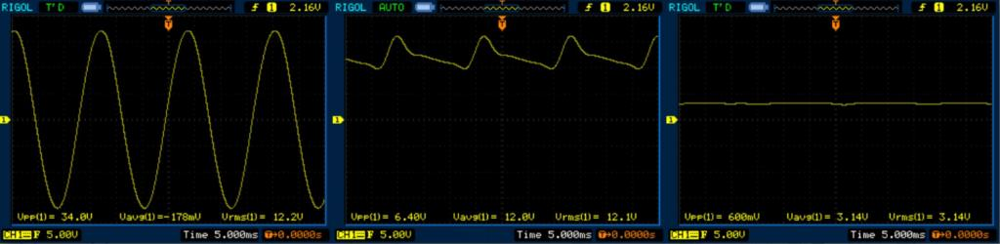
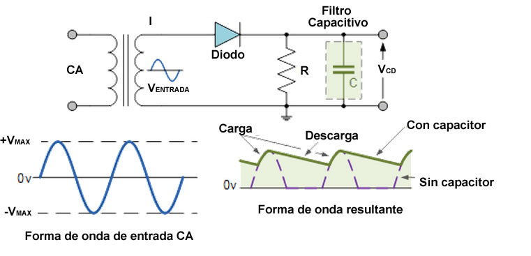
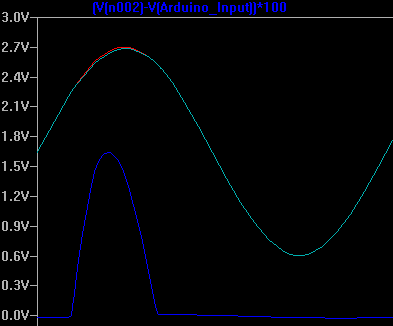

The EmonTx3.4 seems to be a low power application. I have been reading reading that i can use a half wave instead of a full wave rectifier in low power applications, i already did the circuit in a protoboard, using a simple rectifier diode and been doing tests
Using the osciloscope you can see the wave forms from the Vin, the output of the diode, and finally the output of the diode using a Average sampling that ends up giving 600mV
My guess is that if i change the value of the cap, the rize will be lower, however, unless the diode used in the original design does something different, im wondering how is the EmonTX getting a steady DC value for its signals offset, and to power the microcontroler using 3.3v
My main concern here is, that at least in the osciloscope, i cant seem to get a 3.3v value, which makes me wonder how is this part of the circuit working



Duplicate post deleted - BT
Re: Question about the half wave rectifier
I also noticed the current limiter resistor at the output of the rectifier, but i miss to understand what its the porpuse, just to limit the amount of current at the Vreg? (probably to prevent it from getting damaged?)
Re: Question about the half wave rectifier
Did you include that MCP1754 in your design? That's the voltage regulator that does the bit you're interested in. It'll output a steady 3.3V regardless of what you feed it (within limits). It's good for at least 70dB of ripple rejection over quite a wide frequency range.
Re: Question about the half wave rectifier
The 56 Ω is there to limit the inrush current into the capacitor, it has nothing to do with the regulator. The amount of charge drawn from the capacitor is constant (over 1 cycle), therefore the charge that the capacitor requires is constant. Because the current is limited by the resistor, in order to charge the capacitor, the current has to flow for a longer time.
But why do this? You need to step back into the ac adapter. The same voltage is also being use to measure the supply voltage. The adapter has a finite internal impedance, which means that the voltage it delivers depends on the current drawn. When you draw a pulse of current, the voltage drops and spoils the measurement. By limiting the current pulse in this way, that voltage drop is made small so that it does not materially affect the voltage measurement.
It is only possible to do this because we have a much higher voltage from the ac adapter than the regulator needs.
My simulations, with the standard ac adapter, show that the dip on the positive peak reduces the rms value of the voltage by less than 0.34% at maximum supply voltage to less than 0.25% at minimum supply voltage. My mains supply is not stable to anywhere near that, I don't have a stabilised power supply so it is impossible to verify that figure.
Here is the simulation at minimum supply voltage. The red trace is the input sine wave, the cyan is the voltage to the analogue input, the blue is the difference × 100.
